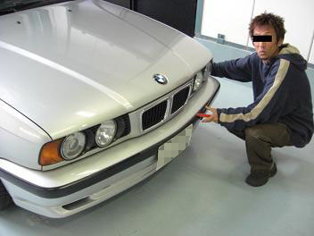 今回もアルタァ邸にお邪魔しての作業ですm(__)m 早速作業にかかるアルタァさん。 盗難シーンではありません（笑 |
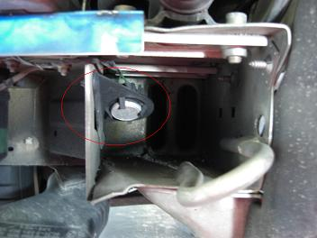 けろよん号のバンパーを外すと･･･ 見たことの無い部品が(・・？) 何なんだろう。 |
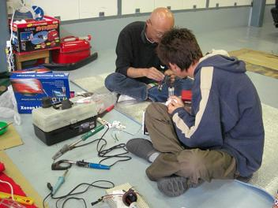 今回は、フォグとハイのHID化です。 |
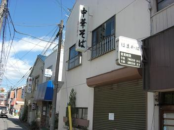 コーキング剤が乾燥するまで待つことに。 アルタァさんおすすめのラーメン屋さんへゴーゴー！ しかし、タイミング悪く臨時休業(*´Д`) 有名なお店のようです。 |
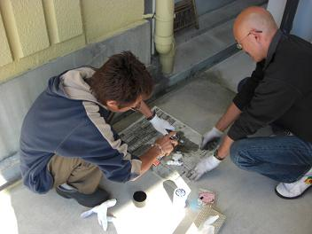 ってことで、アルタァ号のアイドルバルブをクリーニング（｀・ω・´） 綺麗になりました。 |
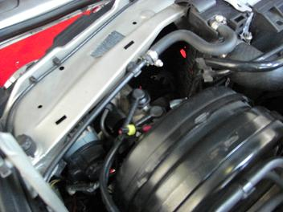 530iは、ブレーキ関係の装置がライト裏にありバラストを固定する スペースがありません。。 |
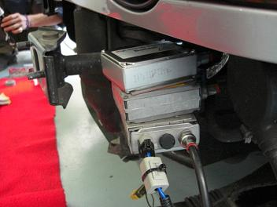 なので。。 怒涛のバラスト３段重ね（笑 実際これで固定しました(^―^) |
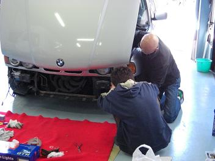 さらに。。 狭くて作業がしにくいので上から下から２人がかりで配線します。 Ｍゴローは写真係りですｄ(^□＾） |
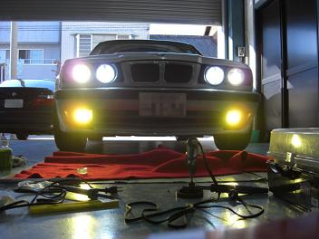 点灯したときの図 明るい・・・( ﾟ∀ﾟ) やっぱりフォグは黄色ですね。 |
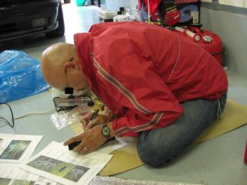 ＨＩＤ化した後はもちろん球切れ警告対策です＾＾ ＬＫＭを加工中のけろよんさん。 |
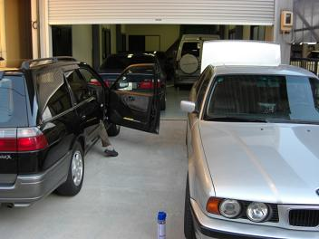 今回も作業場所を提供して下さいましたアルタァさんに感謝です。 |